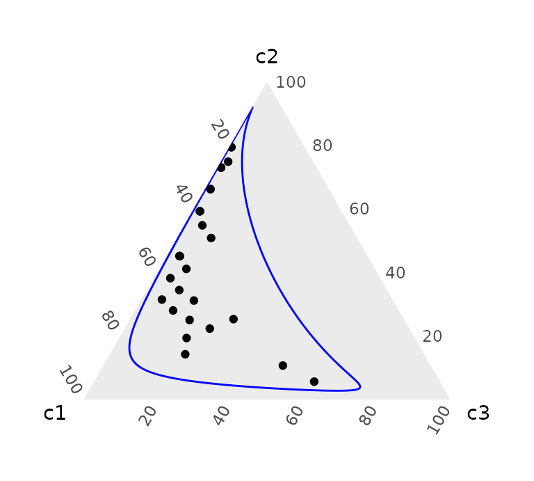

Clustering multivariate count data using the log-ratio-normal-multinomial distribution
clustering.Rmdlibrary(coda.base)
#>
#> Attaching package: 'coda.base'
#> The following object is masked from 'package:stats':
#>
#> dist
library(coda.count)
library(ggtern)
#> Loading required package: ggplot2
#> Registered S3 methods overwritten by 'ggtern':
#> method from
#> +.gg ggplot2
#> grid.draw.ggplot ggplot2
#> plot.ggplot ggplot2
#> print.ggplot ggplot2
#> --
#> Remember to cite, run citation(package = 'ggtern') for further info.
#> --
#>
#> Attaching package: 'ggtern'
#> The following objects are masked from 'package:ggplot2':
#>
#> %+%, aes, annotate, calc_element, ggplot, ggplot_build,
#> ggplot_gtable, ggplotGrob, ggsave, layer_data, theme,
#> theme_bw, theme_classic, theme_dark, theme_gray, theme_light,
#> theme_linedraw, theme_minimal, theme_void
library(randtoolbox)
#> Loading required package: rngWELL
#> This is randtoolbox. For an overview, type 'help("randtoolbox")'.
ellipse = function(mu, sigma, p){
mu = as.vector(mu)
s = -2 * log(1 - p);
ev = eigen(sigma * s)
t_ = seq(0, 2 * pi, length.out = 500)
a = mu + t(t(ev$vectors) * sqrt(ev$values)) %*% rbind(cos(t_), sin(t_))
as.data.frame(t(a))
}
coda_ellipse = function(mu, sigma, p, B = ilr_basis(length(mu) + 1)){
composition(ellipse(mu, sigma, p), B)
}
theme_set(theme_minimal() +
theme(tern.axis.arrow.show = T,
tern.axis.title.show = F,
tern.axis.arrow.text = element_text(face = 'bold')))The log-ratio-normal-multinomial distribution
The logratio-normal-multinomial (LRNM) distribution is the distribution obtained from the compounding of a normal distribution defined on the Simplex using log-ratio coordinates with the multinomial distribution.
We can build a sample of a LRNM as follows:
- Firstly, for given parameters \(\mu\) and \(\Sigma\) and a certain log-ratio-basis, we generate a log-ratio normally distributed sample. For example, for \(\mu=(0,1)\), \(\Sigma=\left(\begin{matrix}1&-0.5\\-0.5&1\end{matrix}\right)\) and compositional basis \(B=\left\{(e^{\sqrt{1/2}},e^{-\sqrt{1/2}}, e), (e^{\sqrt{1/6}},e^{\sqrt{1/6}},e^{-\sqrt{2/3}}) \right\}\).
N = 30
mu = c(0,1)
sigma = matrix(c(1, -0.5,
-0.5, 1), nrow = 2)
B = ilr_basis(3)
set.seed(1)
P = as.data.frame(rlrnormal(n = N, mu, sigma, B))
H = coordinates(P, B)We can visualise either the compositional sample in a Ternary diagram or their coordinates (with respect basis \(B\)).
ggtern() +
geom_path(data = coda_ellipse(mu, sigma, 0.95), aes(x = x1, y = x2, z = x3), col = 'blue') +
geom_point(data = P, aes(x = V1, y = V2, z = V3))
ggplot() +
geom_path(data = ellipse(mu, sigma, 0.95), aes(x = V1, y = V2), col = 'blue') +
geom_point(data = H, aes(x = x1, y = x2))

- After the logratio-normal random variables are generated, they are used to generate a new sample of counts using the multinomial distribution. With the function
rmultinomial()we can generate that sample:
SIZE = 10
Y = rmultinomial(size = SIZE, p = as.matrix(P))
cat(Y_labels <- sprintf("(%s)", apply(Y, 1, paste, collapse = ',')), sep = ', ')(0,9,1), (2,6,2), (6,4,0), (6,3,1), (6,4,0), (6,2,2), (7,3,0), (5,4,1), (6,4,0), (4,6,0), (2,8,0), (2,8,0), (8,0,2), (3,7,0), (7,1,2), (6,4,0), (3,6,1), (3,3,4), (3,1,6), (1,9,0), (3,7,0), (5,3,2), (7,2,1), (2,8,0), (4,6,0), (3,0,7), (8,2,0), (1,9,0), (5,2,3), (6,4,0)
To visualise the counting sample we can use a ternary diagram, but observations will only appear in discrete positions. In general, we call the \((K,D)\)-simplex lattice the space for the \(D\)-part count data with size \(K\). In gradient color we can visualise the previous sample in the ternary diagram:
key = function(x) paste(x, collapse = '-')
tab = table(apply(Y, 1, key))
Yc = as.data.frame(Y[!duplicated(Y),])
Yc$freq = as.numeric(tab[match(apply(Yc, 1, key), names(tab))])
lbls = paste(' ', 0:SIZE, ' ')
brks = 0:SIZE/SIZE
ggtern() +
geom_point(data = Yc, aes(x = V1, y = V2, z = V3, col = freq), size = 3) +
theme(tern.axis.arrow.show = T,
tern.axis.title.show = F,
tern.axis.arrow.text = element_text(face = 'bold')) +
scale_color_gradient(low = 'blue', high = 'red') +
scale_T_continuous(minor_breaks = NULL, breaks = brks, labels = lbls) +
scale_L_continuous(minor_breaks = NULL, breaks = brks, labels = lbls) +
scale_R_continuous(minor_breaks = NULL, breaks = brks, labels = lbls) +
labs(col = 'Frequency')
Estimating the parameters of a LRNM
To estimate the parameters of a LRNM distribution we need of numerical integration methods. Using Hermite polynomials we can estimate the parameters of the LRNM distribution:
fit = fit_lrnm(Y, method = 'hermite', probs = TRUE, B = B)
fit[1:2]
#> $mu
#> [,1] [,2]
#> [1,] 0.05051636 1.708725
#>
#> $sigma
#> [,1] [,2]
#> [1,] 0.5265051 -0.8120179
#> [2,] -0.8120179 1.9798821Together with the expected probabilities to generate the counts:
E = as.data.frame(fit$P)
H_E = coordinates(E, B)
ggtern() +
geom_path(data = coda_ellipse(fit$mu, fit$sigma, 0.95), aes(x = x1, y = x2, z = x3), col = 'blue') +
geom_point(data = E, aes(x = x1, y = x2, z = x3))
ggplot() +
geom_path(data = ellipse(fit$mu, fit$sigma, 0.95), aes(x = V1, y = V2), col = 'blue') +
geom_point(data = H_E, aes(x = x1, y = x2))
Defining a distance between multivariate count data when the total is not of importance
Once the parameters have been estimated, we can approximate the posterior distribution of each observation using a Laplace approximation.
lN = lrnm_posterior_approx(Y, fit$mu, fit$sigma, B)For example, the Laplace approximation for the posterior distribution of the first and second observations are
I = 1
J = 2
ggtern() +
geom_path(data = coda_ellipse(fit$mu, fit$sigma, 0.95), aes(x = x1, y = x2, z = x3), col = 'blue') +
geom_point(data = E, aes(x = x1, y = x2, z = x3), alpha=0.1) +
geom_point(data = E[I,,drop=F], aes(x = x1, y = x2, z = x3), col = '#880023') +
geom_path(data = coda_ellipse(lN[[I]]$mu, lN[[I]]$sigma, 0.95), aes(x = x1, y = x2, z = x3), col = '#880023') +
geom_point(data = E[J,,drop=F], aes(x = x1, y = x2, z = x3), col = '#238800') +
geom_path(data = coda_ellipse(lN[[J]]$mu, lN[[J]]$sigma, 0.95), aes(x = x1, y = x2, z = x3), col = '#238800')
ggplot() +
geom_path(data = ellipse(fit$mu, fit$sigma, 0.95), aes(x = V1, y = V2), col = 'blue') +
geom_point(data = H_E, aes(x = x1, y = x2), alpha=0.1) +
geom_point(data = H_E[I,,drop=F], aes(x = x1, y = x2), col = '#880023') +
geom_path(data = ellipse(lN[[I]]$mu, lN[[I]]$sigma, 0.95), aes(x = V1, y = V2), col = '#880023') +
geom_point(data = H_E[J,,drop=F], aes(x = x1, y = x2), col = '#238800') +
geom_path(data = ellipse(lN[[J]]$mu, lN[[J]]$sigma, 0.95), aes(x = V1, y = V2), col = '#238800')

This approximation allows to define a distance between two multivariate count observations as the distance between their repective posterior distributions approximations. Because the approximation is Gaussian, it seems natural to use the well-known Bhattacharyya distance.
\[ D_{\text{Bhattacharyya}}(N(\mu_1, \Sigma_1), N(\mu_2, \Sigma_2)) = \frac{1}{8}(\mu_1-\mu_2)^T \Sigma^{-1} (\mu_1-\mu_2) + \frac{1}{2} \log( \frac{\text{det}(\Sigma)}{\sqrt{\text{det}(\Sigma_1) \text{det}(\Sigma_2)}}) \]
Using this definition, we can calculate the distance between each pair of observations and use classical approaches to cluster the data.
Bhattacharyya = function(N1, N2){
SIGMA = (N1$sigma + N2$sigma) / 2
invSIGMA = solve( SIGMA )
d = 1/8 * t(N1$mu - N2$mu) %*% invSIGMA %*% (N1$mu - N2$mu) +
1/2 * log( det(SIGMA) / sqrt(det(N1$sigma)*det(N2$sigma)) )
d[1]
}
D = matrix(0, nrow = N, ncol = N)
for(i in 1:N){
for(j in 1:N){
D[i,j] = Bhattacharyya(lN[[i]], lN[[j]])
}
}
D = as.dist(D)